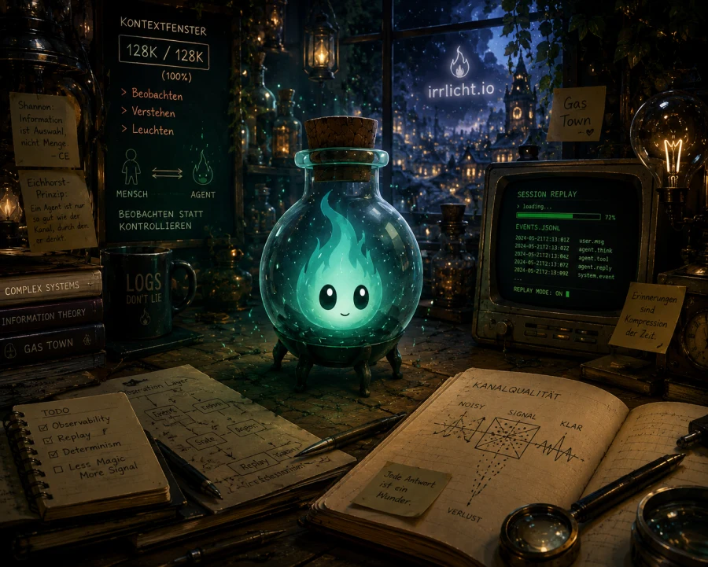
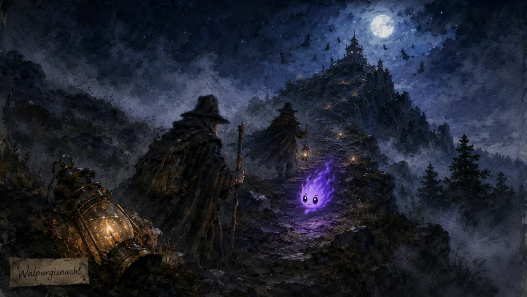
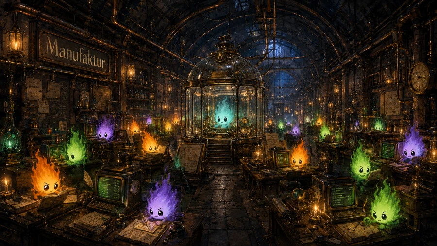
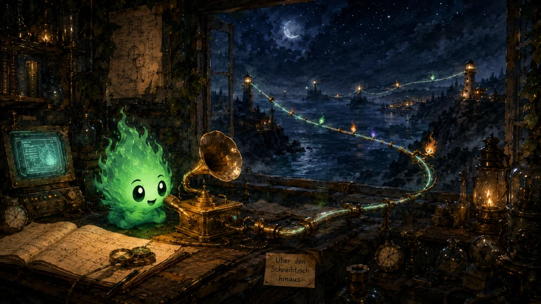

The Story
How Irrlicht came to be — and why ambient monitoring matters once you're running more than one agent at a time.
One agent on one screen. I kept swivelling between tabs to check whether it had finished, and every check broke the film I was trying to watch on the other monitor. I wanted something quieter than a notification — a small light I could glance at from the corner of my eye, without the agent demanding the whole room.

The first spark
The first version was a dot in the menu bar. Working, waiting, ready — three colours, no chrome. Then a second agent came along. Then a third. The dots multiplied; the discipline held. Glance up, see the state, go back to whatever I was actually doing.
A name from the Brocken
The mountain is the Brocken, the highest peak of the Harz — the ancient mountain range in central Germany. As a child I could see it from my bedroom window. The folklore of the Harz is full of small ghostly lights: phantom flames drifting over the moors and bogs near the Brocken, luring wanderers off the safe path and into the marsh. Harzer miners reported the same lights deep in the tunnels near Clausthal-Zellerfeld — sometimes a warning, sometimes a promise of ore ahead.
The most famous of them appears in Goethe's Faust. On Walpurgisnacht, an Irrlicht guides Faust and Mephistopheles up the Brocken, lighting their way through the Traum- und Zaubersphäre — the realm of dream and sorcery. A treacherous companion on a treacherous path:
Ein Irrlicht mein' ich wohl zu sehn. — Goethe, Faust I, Walpurgisnacht

This Irrlicht flips the myth. Instead of a deceptive light that leads you astray, it is the tamed will-o'-the-wisp — small, honest lights that appear exactly where your attention should go.
From three lights to a city
It didn't stay simple. The menu bar ran out of room. Different vendors meant different rate limits and different transcript formats. Then orchestrators arrived — Gas Town with eighteen agents on a single run, a small coding factory humming away in the background. Eighteen agents without monitoring is not parallelism; it is chaos with extra steps.

Aggregation became the point. Group by orchestrator, by project, by parent session. Make the menu bar say something useful again, even when the worker count is in the dozens.
What was missing
Along the way I kept tripping over the same four gaps in what the agent vendors give you:
- Cost per project. Nobody tracks it. You can see the per-call price, sometimes, on the provider's dashboard — but not which of your repos burned through it. Irrlicht does, because it watches sessions where they actually live: on disk, with a CWD.
- Cross-model review. An agent reviewing another agent's work produces visibly better results when the reviewer runs on a different model. You cannot get that with one vendor's CLI alone. Irrlicht treats Claude Code, Codex, Pi, Aider, OpenCode, Kiro CLI, Gemini CLI, and Antigravity as first-class peers.
- Context observation. Vendors hide context usage behind a slash command, or behind nothing at all. You should not have to type
/usage— or guess — to find out you are about to auto-compact. Irrlicht reads it from the transcript and exposes it as a pressure level you can see. - Attention. Agents can run for a long time on their own, but every so often they need a permission, a feedback, a nudge. The hard part is knowing when, without staring at the screen. That is what a light is for.
The control plane
Irrlicht today is the surface that holds all four. Lights for state, badges for subagent counts, costs grouped by project, context pressure that doesn't lie, and notifications only when an agent actually needs you. One ambient layer, sitting in the menu bar, doing the watching so you don't have to.
So you can be doing something else — reading, writing, watching the film — and still know.
Beyond the menu bar
The lights now have voices. Irrlicht can chime when a session shifts state, and call out by name when a waiting one is asking for a permission. Sometimes the right light to see is the one you can hear from the kitchen.
Next they leave the laptop. The roadmap is straightforward: aggregate the agents running on your dev servers, your secondary machines, and — with your permission — your collaborators'. One light system for one team, one studio, one factory floor.
Eventually they'll break out of the ecosystem too. Beyond Mac. Beyond CLI agents. Beyond whatever box we put them in this week.

A community of light-keepers
I cannot do this alone — not even with an army of agents.
Irrlicht is a community project. Scholars working through their first pull request and grown-up software wizards retuning their daily workflows are equally welcome here. The fastest way to learn agent-driven coding is to help build one of the things that watches the agents.
If you want to join, the contributing guide is the starting point. Read it, file an issue, open a PR. The lights need keepers.